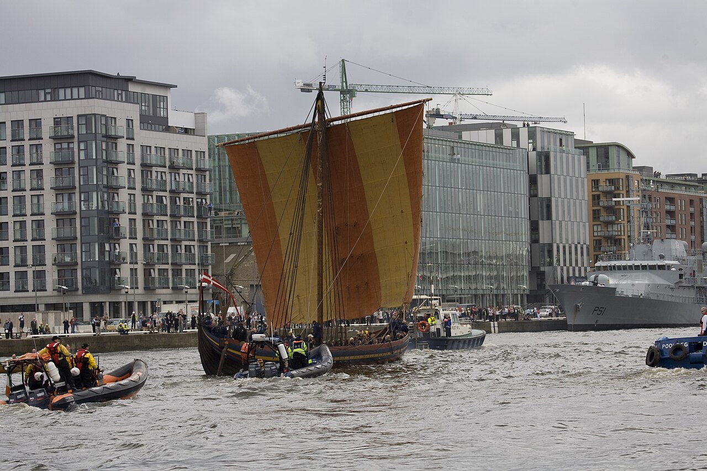

ARCHIVE / 01THE SEA IS THE FIRST ROAD
Built for a world
without borders.
Light, fast, and made to meet the open water, the longship connected distant shores—and carried stories further than anyone could see.
SHIP CLASS // LONGSHIP 54° 21′ N